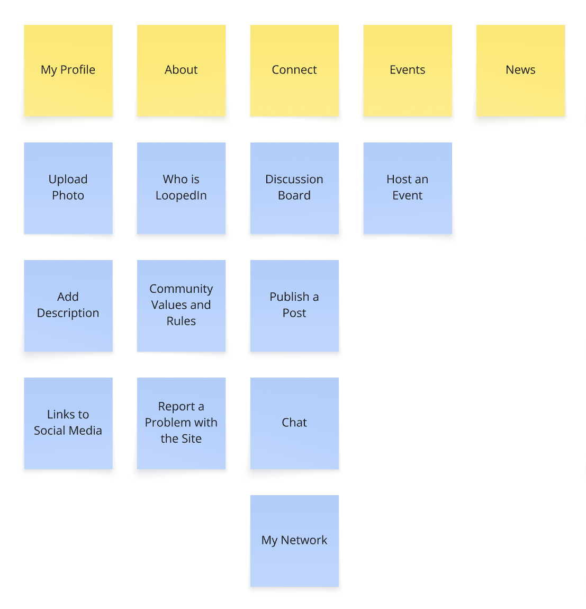
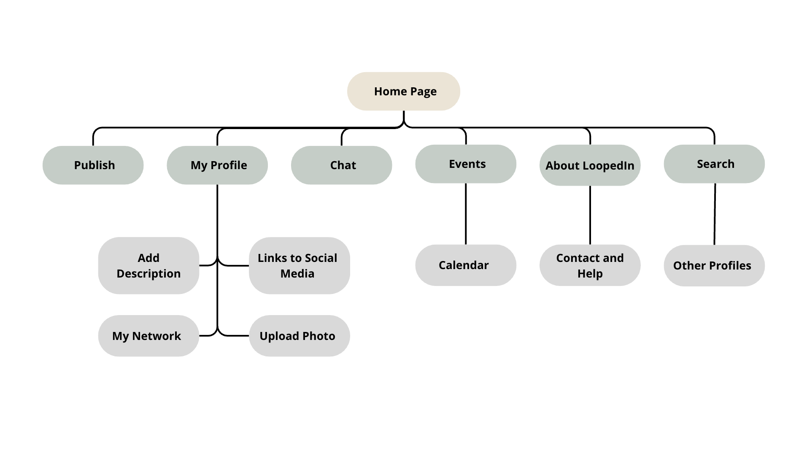

Site Map
A visual and textual map showing the structure of the website, how pages are linked, and the user’s expected navigation flow across both mobile and desktop.
This is a draft of the site map.
This is the site map for the website.
LoopedIn is a hub for users to see content regardin technology and innovation. It is a platform where the users can interact with each other and share their ideas. It supports the client's goal of connecting with others and sharing knowledge. The user story is "As a user, I want to connect with others and share my ideas."
The website is designed to be user-friendly and easy to navigate. It provides quick access to all the features and functionalities of the platform. The user story is "As a user, I want to easily access all the features of the website from the get go."
A page for user profiles, private messaging, and
interest-based networking.
Features: Searchable profiles,
tags for interests, contact buttons.
User/client support: Supports
community growth and collaboration. Matches user
story: “As a user, I want to connect with others
in my field.”
Accessibility: Clear labels,
ARIA roles for form fields, logical tab order.
A page for upcoming community events, with
filters and RSVP options.
Features: Event calendar, RSVP
buttons.
User/client support: Promotes
engagement and attendance. Aligns with user
story: “As a user, I want to find events related
to my interests.”
Accessibility: High-contrast
links, date formats for screen readers,
mobile-friendly calendar layout.